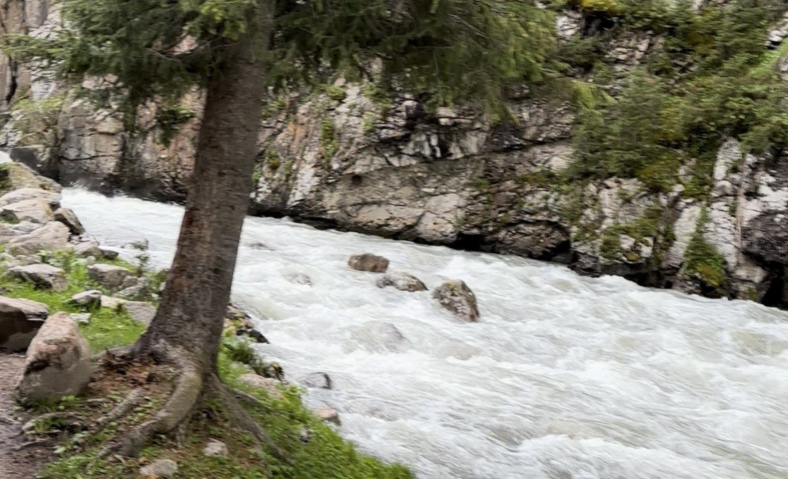

Short answer: yes — Kyrgyzstan is generally safe. Violent crime against tourists is rare. The real risks here are not people — they are mountains, horses, roads, and overconfidence. If you respect the landscape and use common sense, your trip will be smooth.

Personal Safety in Cities
Bishkek, Karakol and most towns feel relaxed and friendly. Locals are curious, often helpful, rarely aggressive. Petty theft can happen in bazaars or marshrutkas — keep your phone and wallet secure.
Avoid getting visibly drunk alone at night. Use registered taxis (Yandex works well). Central areas are fine; empty outskirts after midnight — unnecessary risk.

Mountains: The Real Risk
The biggest danger in Kyrgyzstan is nature. Weather changes fast. A sunny morning can turn into cold rain or fog in hours. Many trails are not marked. Mobile signal disappears quickly outside cities.
If you hike: • download offline maps • carry layers (even in summer) • bring water + power bank • tell someone your route • start early — storms often come in afternoon
Altitude sickness can start above 2,500–3,000m. Go slow. Hydrate. Don’t ignore dizziness.

Horse Riding Safety (Important)
Horse trekking is iconic here — but it’s also where tourists get injured most often. Many visitors overestimate their riding skills.
- Before riding:
- Ask for a calm horse if you’re beginner
- Wear proper shoes (no slippery sneakers)
- Keep distance between horses
- Never stand directly behind a horse
- Don’t wrap reins around your hand
- If horse runs — lean slightly back, don’t panic
Choose organized tours with experienced local guides. Random roadside horse rentals = higher risk.

Road & Transport Safety
Mountain roads can be narrow, foggy, and shared with livestock. Night driving in high passes is not recommended.
Marshrutkas are safe but sometimes fast. For remote places (Altyn-Arashan, Kel-Suu, high passes) — use reliable 4x4 drivers.
Border & Political Areas
Avoid border areas near Tajikistan unless you have updated information. Sometimes restrictions appear temporarily. Stick to official tourist routes unless advised otherwise.
Health & Medical
Bring travel insurance — especially if trekking or riding. Private clinics in Bishkek are decent; rural medical access is limited.
Sun is strong at altitude. Dehydration happens faster than expected.
Quick Practical Tips
-
🐎
Respect horsesThey’re powerful animals, not tourist toys.
-
⛰️
Mountains first, ego secondTurn back if weather changes.
-
📱
Offline mapsGoogle Maps + Maps.me download before you go.
-
💵
Carry some cashRemote villages don’t accept cards.
-
📞
Emergency numbersPolice 102 · Ambulance 103 · Fire 101
-
🧭
Travel insuranceMandatory if you hike or ride.